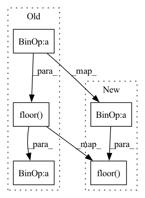

Pattern ID :33949
Before Change
min_val, max_val = gate_min_max(min_val, max_val)
if use_symmetric_encodings:
delta = max_val / np.floor( num_steps / 2)
else:
delta = (max_val - min_val) / num_steps
if isinstance(delta, np.ndarray):After Change
// Use only max val to compute delta in the case of signed symmetric
if use_symmetric_encodings and min_val < 0:
num_positive_steps = np.floor( num_steps / 2)
delta = max_val / num_positive_steps
offset = -num_positive_steps
if not use_strict_symmetric:
offset -= 1In pattern: SUPERPATTERN
Frequency: 5
Non-data size: 5
Instances Fragment ID: 97236521
Project Name: quic/aimet
Commit Name: 2c4962a793322a8e4dece7e87d455c66e6196f56
Time: 2023-03-28
Author: quic_klhsieh@quicinc.com
File Name: TrainingExtensions/common/src/python/aimet_common/quantsim.py
M Class Name: AnonimousClass
N Class Name: AnonimousClass
M Method Name: calculate_delta_offset(5)
N Method Name: calculate_delta_offset(5)
M Parent Class:
N Parent Class:
M File Name: TrainingExtensions/common/src/python/aimet_common/quantsim.py
N File Name: TrainingExtensions/common/src/python/aimet_common/quantsim.py
M Start Line: 118
M End Line: 130
N Start Line: 120
N End Line: 138
Before Change
@property
def psf_window(self):
use_center = self.center_shift + np.floor( self["center"].value.detach().numpy()/ self.model_image.pixelscale)
psf_origin = (
(use_center[1] - (self.psf_window_size - (self.psf_window_size % 2))/2)*self.model_image.pixelscale,
(use_center[0] - (self.psf_window_size - (self.psf_window_size % 2))/2)*self.model_image.pixelscale,
)After Change
@property
def psf_window(self):
use_center = np.floor( self["center"].value.detach().numpy()/ self.model_image.pixelscale)
psf_offset = (self.psf_window_size - (self.psf_window_size % 2))/2
psf_origin = (
(use_center[0] - psf_offset)*self.model_image.pixelscale,
(use_center[1] - psf_offset)*self.model_image.pixelscale, Fragment ID: 97236520
Project Name: connorstoneastro/autoprof
Commit Name: 1755fb6a4b8078b28b0821a93913880d039f7f2f
Time: 2022-10-31
Author: connorstone628@gmail.com
File Name: autoprof/models/_model_methods.py
M Class Name: AnonimousClass
N Class Name: AnonimousClass
M Method Name: psf_window(1)
N Method Name: psf_window(1)
M Parent Class:
N Parent Class:
M File Name: autoprof/models/_model_methods.py
N File Name: autoprof/models/_model_methods.py
M Start Line: 79
M End Line: 86
N Start Line: 78
N End Line: 87
Before Change
def create_pillars(pc, grid_cell_size, x_min, x_max, y_min, y_max, z_min, z_max):
// Get number of pillars in x and y direction
n_pillars_x = math.floor( (x_max - x_min) / grid_cell_size) + 1
n_pillars_y = math.floor((y_max - y_min) / grid_cell_size) + 1
points = list()After Change
def create_pillars(pc, grid_cell_size, x_min, x_max, y_min, y_max, z_min, z_max):
// Get number of pillars in x and y direction
n_pillars_x = math.floor( (x_max - x_min) / grid_cell_size)
n_pillars_y = math.floor((y_max - y_min) / grid_cell_size)
points = list()
indices = list() Fragment ID: 97236526
Project Name: jabb0/fastflow3d
Commit Name: 4893c9a2abdadaab889b9df86f5da0a69086470a
Time: 2021-06-13
Author: aron.distelzweig@hotmail.com
File Name: utils/pillars.py
M Class Name: AnonimousClass
N Class Name: AnonimousClass
M Method Name: create_pillars(8)
N Method Name: create_pillars(8)
M Parent Class:
N Parent Class:
M File Name: utils/pillars.py
N File Name: utils/pillars.py
M Start Line: 48
M End Line: 49
N Start Line: 48
N End Line: 49
Before Change
@property
def integrate_window(self):
use_center = self.center_shift + np.floor( self["center"].value.detach().numpy()/ self.model_image.pixelscale)
int_origin = (
(use_center[1] - (self.integrate_window_size - (self.integrate_window_size % 2))/2)*self.model_image.pixelscale,
(use_center[0] - (self.integrate_window_size - (self.integrate_window_size % 2))/2)*self.model_image.pixelscale,
)After Change
@property
def integrate_window(self):
use_center = np.floor( self["center"].value.detach().numpy()/ self.model_image.pixelscale)
int_origin = (
(use_center[0] - (self.integrate_window_size - (self.integrate_window_size % 2))/2)*self.model_image.pixelscale,
(use_center[1] - (self.integrate_window_size - (self.integrate_window_size % 2))/2)*self.model_image.pixelscale,
) Fragment ID: 97236525
Project Name: connorstoneastro/autoprof
Commit Name: 1755fb6a4b8078b28b0821a93913880d039f7f2f
Time: 2022-10-31
Author: connorstone628@gmail.com
File Name: autoprof/models/_model_methods.py
M Class Name: AnonimousClass
N Class Name: AnonimousClass
M Method Name: integrate_window(1)
N Method Name: integrate_window(1)
M Parent Class:
N Parent Class:
M File Name: autoprof/models/_model_methods.py
N File Name: autoprof/models/_model_methods.py
M Start Line: 66
M End Line: 69
N Start Line: 65
N End Line: 67
Before Change
def __init__(self, x_max, x_min, y_max, y_min, grid_cell_size, in_features=6, out_features=64):
super().__init__()
self.n_pillars_x = math.floor((x_max - x_min) / grid_cell_size) + 1
self.n_pillars_y = math.floor( (y_max - y_min) / grid_cell_size) + 1
self.out_features = out_features
After Change
def __init__(self, x_max, x_min, y_max, y_min, grid_cell_size, in_features=6, out_features=64):
super().__init__()
self.n_pillars_x = math.floor((x_max - x_min) / grid_cell_size)
self.n_pillars_y = math.floor( (y_max - y_min) / grid_cell_size)
self.out_features = out_features
self.linear = torch.nn.Linear(in_features=in_features, out_features=out_features) Fragment ID: 97236530
Project Name: jabb0/fastflow3d
Commit Name: 4893c9a2abdadaab889b9df86f5da0a69086470a
Time: 2021-06-13
Author: aron.distelzweig@hotmail.com
File Name: networks/encoder.py
M Class Name: PillarFeatureNet
N Class Name: PillarFeatureNet
M Method Name: __init__(8)
N Method Name: __init__(8)
M Parent Class: torch.nn.Module
N Parent Class: torch.nn.Module
M File Name: networks/encoder.py
N File Name: networks/encoder.py
M Start Line: 20
M End Line: 21
N Start Line: 20
N End Line: 21